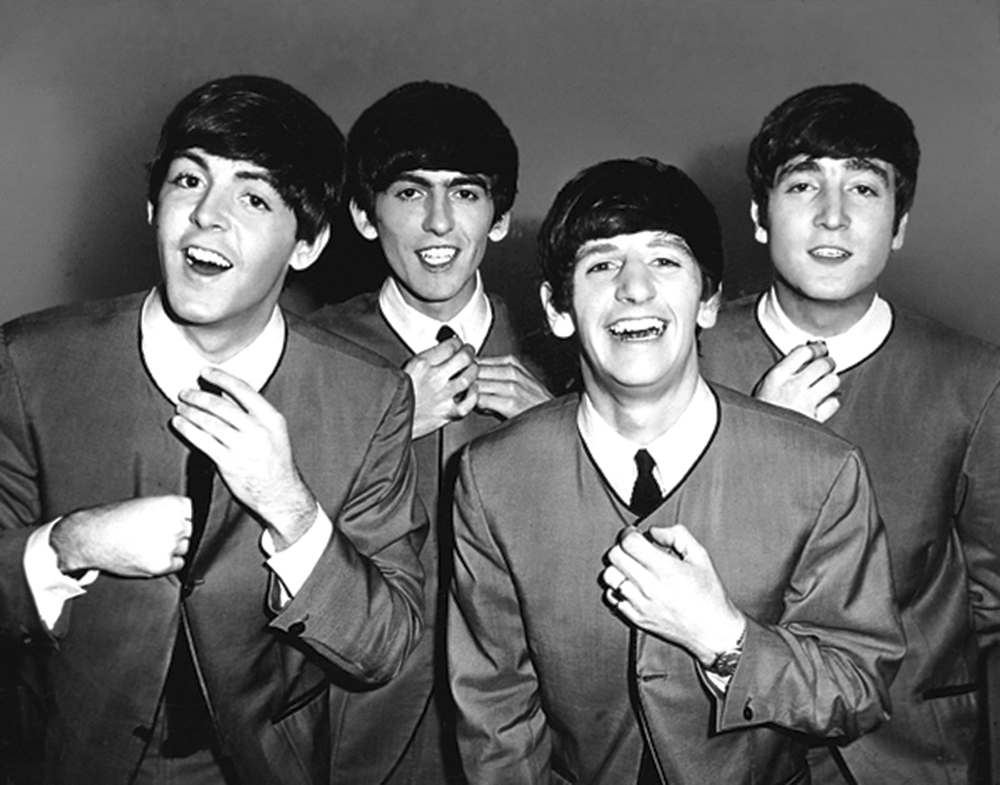
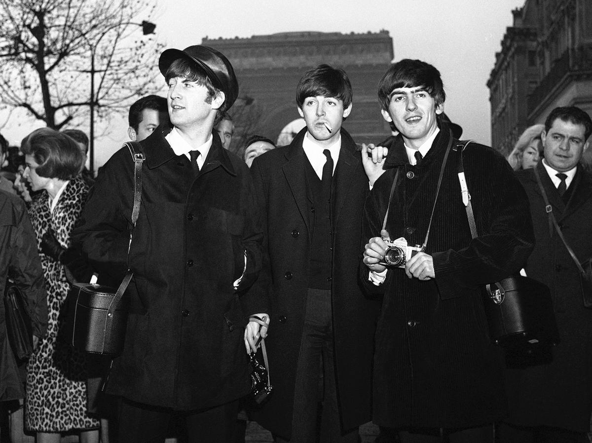
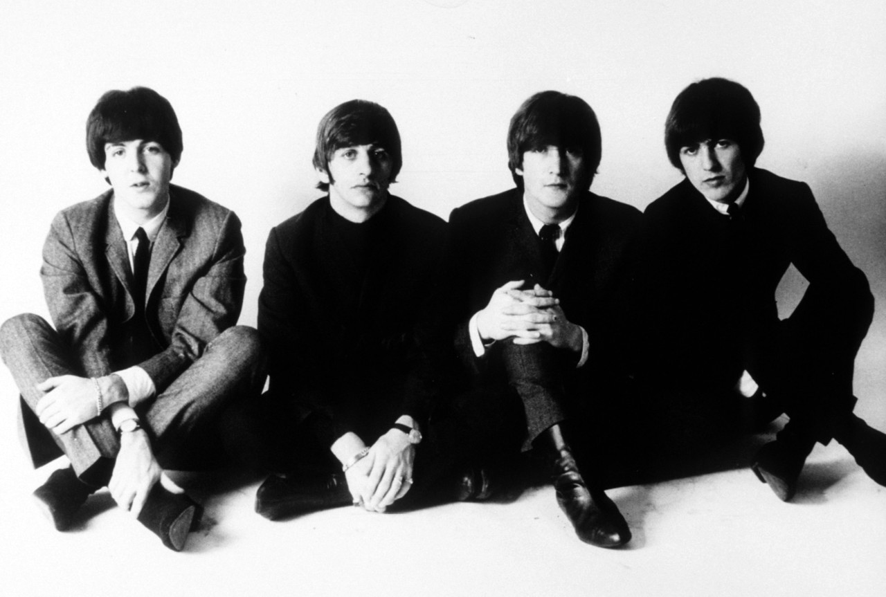
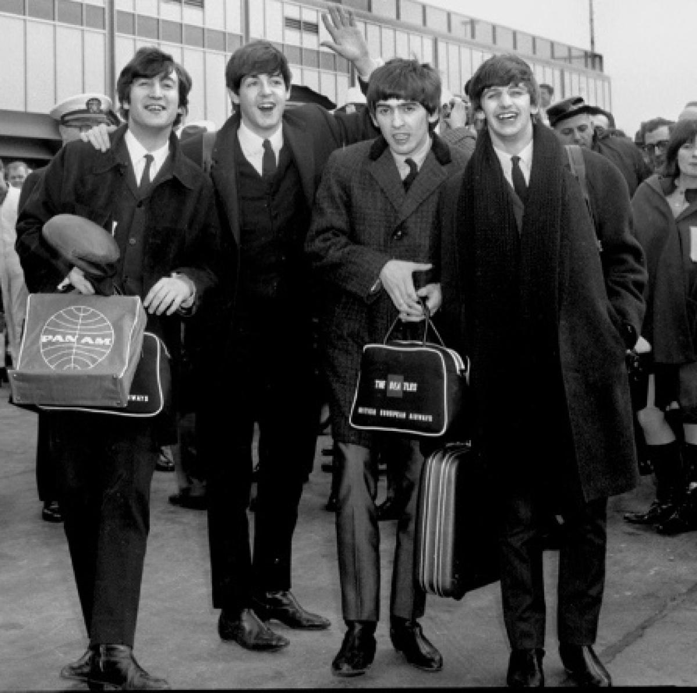
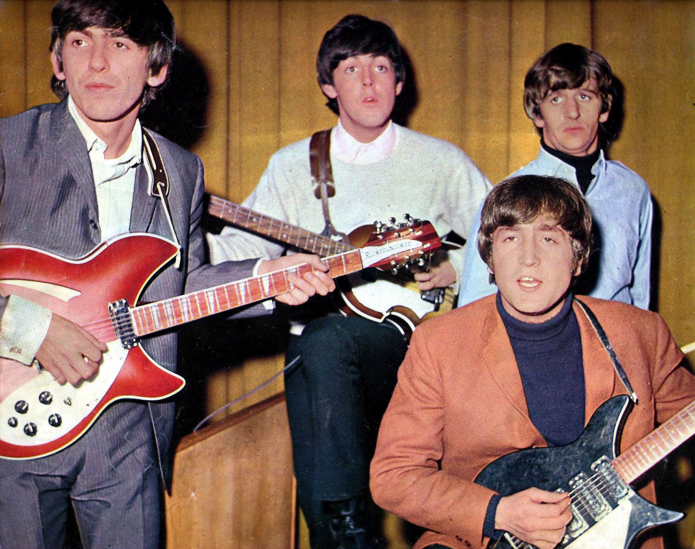
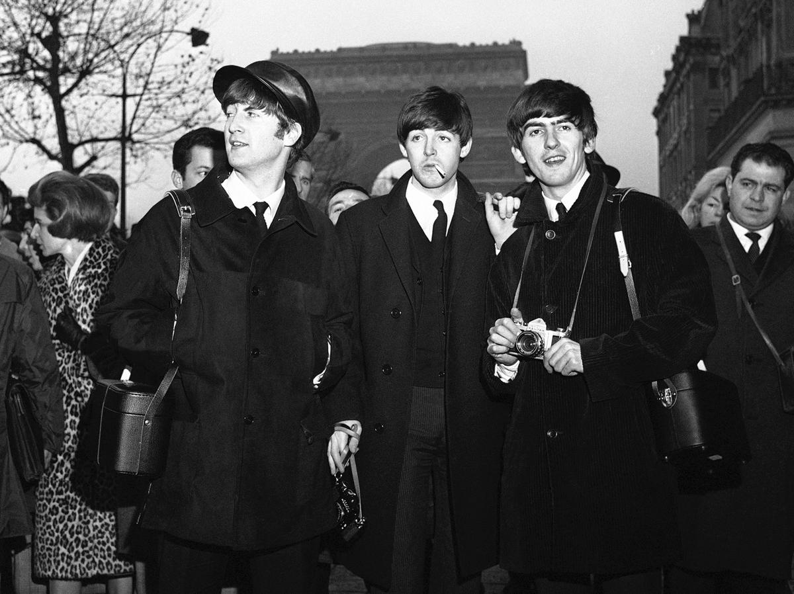
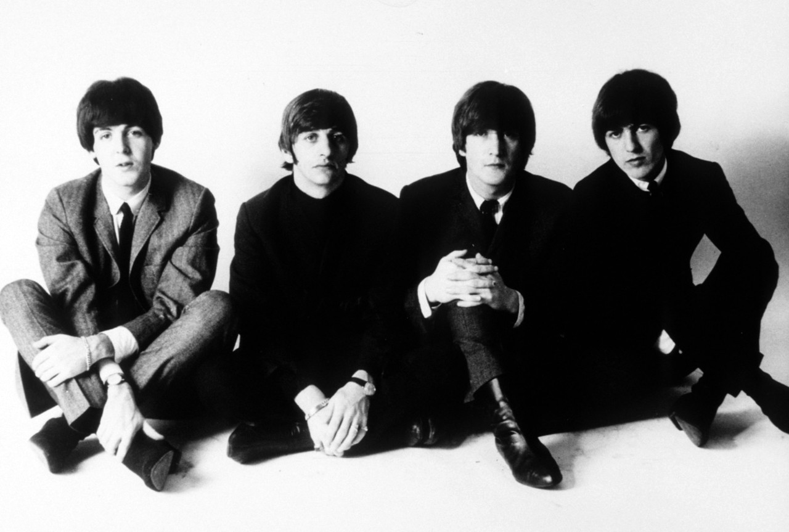
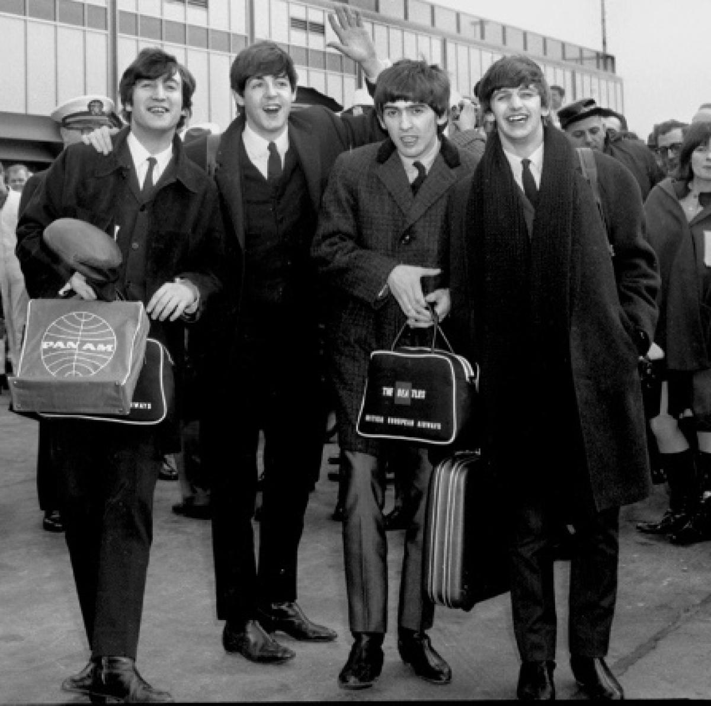
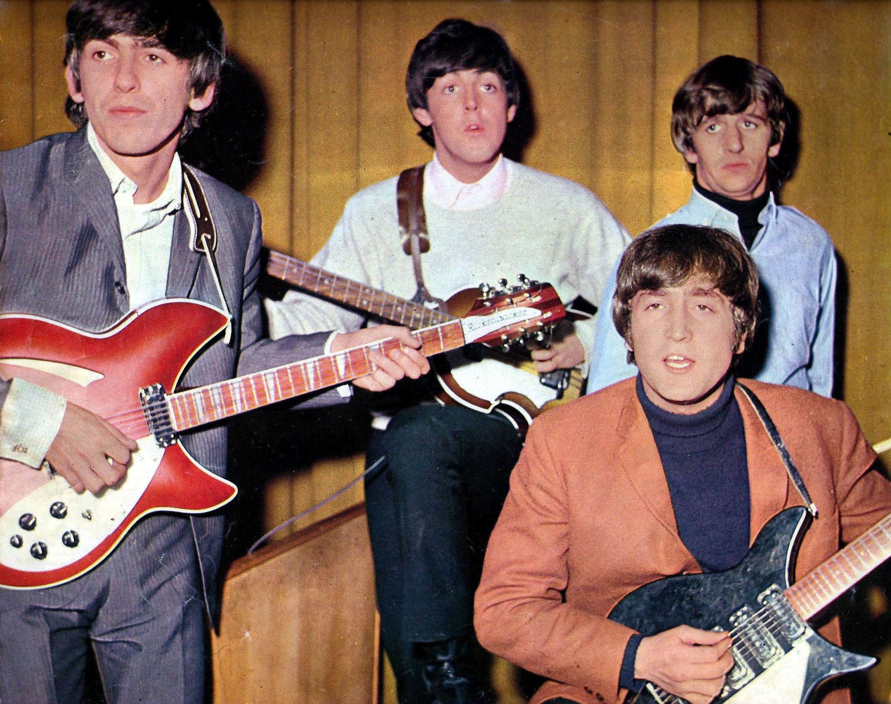

4 June 1964
The Beatles were an English rock band formed in Liverpool in 1960. With members John Lennon, Paul McCartney, George Harrison and Ringo Starr, they became widely regarded as the foremost and most influential music band in history. Rooted in skiffle, beat and 1950s rock and roll, the Beatles later experimented with several musical styles, ranging from pop ballads and Indian music to psychedelia and hard rock, often incorporating classical elements and unconventional recording techniques in innovative ways. In 1963, their enormous popularity first emerged as "Beatlemania"; as the group's music grew in sophistication, led by primary songwriters Lennon and McCartney, the band were integral to pop music's evolution into an art form and to the development of the counterculture of the 1960s.
 






